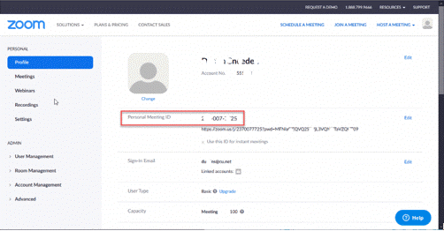

Providers
At least 1 provider must be entered, in order to schedule appointments, submit claims, or create POS transactions. Providers can also be associated with Patients, HA Histories, and Histories.

|
Name - First, Initial, Last |
The name of the Provider rendering services.
|
|
Display Order |
If desired, you can choose the order that providers appear in the Provider view in the Appointment calendar. If 0 is left in this field, then providers will be ordered by name. |
|
Use with Patient Scheduling |
This box will only be visible if Online Patient Scheduling has been enabled for the practice. Check this box to make this Provider available online for patient's to choose when requesting an appointment. |
|
User Name |
Select the associated user for this provider, for scheduling and logging purposes. |
|
Color |
A color to code the Provider on the appointment calendar. |
|
Zoom Credentials |
If the provider will be conducting Telehealth sessions with patients, enter their Zoom credentials here, after creating a Zoom account. You can find the Meeting ID from the Zoom profile page.  |
|
Non-Billable Provider |
Check this box if the provider is not able to bill insurance claims. If a provider is Non-Billing, a Billing provider must be selected. |
|
Billing Provider |
Must be selected if Non-Billable Provider is checked. Choose from other providers who do have billing credentials. |
|
Patient Notification Templates |
Click this button to setup templates for this provider to be used in appointment notifications. See Appointment Notification Setup for details. |
|
Signature Image |
Click this button |
|
Signature on File |
An indication that the provider has signed a statement acknowledging the performance of any services submitted as an insurance claim. |
|
Signature Date |
The date the provider's signature was obtained. |
|
Degree |
The degree of the Provider rendering services. Enter as you'd like it to appear in various reports and letters (including diagnostic reports and printed claims). |
|
Inactive |
Check this box if the provider will no longer be used. |


 Enter the following codes ONLY if different from the 'Pay To' Practice information
Enter the following codes ONLY if different from the 'Pay To' Practice information
|
|
|
|
Tax ID |
The Tax ID number of the provider |
|
Tax ID Type |
Either Employer Tax ID or Social Security number |
|
Taxonomy |
Provider's Taxonomy code to be included with electronic and printed claims. |
|
NPI |
The National Practitioner Identifier number - a unique identifier for health care providers. To use the NPI lookup tool, click on the magnifying glass icon |
|
|
The following additional payer ID numbers are generally not used for electronic claims any longer, but may be used in some special circumstances. |
|
Medicare # |
The Medicare number assigned to the pay-to provider. |
|
Medicaid # |
The Medicaid number assigned to the pay-to provider. |
|
Specialty Code |
The specialty type of provider. |
|
UPIN # |
The UPIN number assigned to the provider |
|
State License # |
The State License number assigned to the pay-to provider. |
|
Specialty License # |
The specialty license number assigned to the pay-to-provider. |
|
Blue Shield # |
The Blue Shield number for the provider. |


KPI Goals
If using the Business Analytics report in Data Analysis, enter the goals for this provider for each fiscal year.
- To add a new goal, click the New button
 at the bottom of the screen. The add Goal screen will popup.
at the bottom of the screen. The add Goal screen will popup.

- Goal Start Date will be the Fiscal Start Month as assigned in the Practice setup. This cannot be changed.
- Choose the starting year of the fiscal period.
- The Goal End date is calculated automatically to one year after the Start Date.
- End the amount for Target Sales for the site for the year
- To edit an existing goal, select the period from the list and double-click on it. The only editable fields are the year and Target Sales.
- To delete an existing goal, select the period from the list and click the Delete button
 .
.